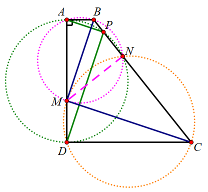

在前面的三篇文章中，我们探究了和正方形有关的中点问题．在本文中，我们来看一个和梯形有关的中点问题．
和梯形相关的中点问题，主要可以分为「底中点」和「腰中点」两大类．对于「底中点」相关的问题，我们合并到下一篇关于一般四边形的中点问题的文章中一起来讨论．今天我们重点来看一下和「腰中点」有关的问题．
「腰中点」的处理方法
对于「腰中点」相关的问题，主要的思路有两个：「倍长中线」和构造「中位线」．
是不是很熟悉？和前面正方形的处理方法是一样的．
倍长中线
如图1，E 是腰 CD 的中点，连结 AE 并延长交 BC 于 F，则有 △ADE≅△FCE，于是 E 也是 AF 的中点，AD=CF．
这个方法相当于是 △ADE 旋转到了 △FCE，于是把原来的梯形变成了一个三角形．
这个方法同时可以用来证明梯形的中位线定理．

梯形的中位线
如图2，E 是腰 CD 的中点，取 AD 的中点 F，则 EF 是梯形 ABCD 的中位线，于是 EF∥AB∥CD，且 EF=21(AB+CD)．
直角梯形的「腰中点」
如图3，对于直角梯形 ABCD，∠A=∠D=90∘，取腰 BC 的中点 E，则 EA=ED，即 △AED 是等腰三角形．

用上面两种方法，都很容易证明这个命题．
一种特殊情况
如果在图3中加入 AE⊥DE，也就是 △AED 是等腰直角三角形的条件，那么 AB+CD=AD．

如果用第1种方法，如图5，则 DE 垂直平分 AF， △ADF 是等腰直角三角形，
AD=DF=DC+CF=DC+AB

如果用第2种方法，如图6，则
AD=2EF=AB+CD
如果我们在 AD 上取 AM=DC，则 DM=AB，△BAM≅△MDC，于是 △MBC 是等腰直角三角形．
如果再考虑 AE 与 BM 的交点 P，DE 与 CM 的交点 Q，则有 PQ⊥CD，BP=MQ，MP=CQ．

因为 ∠PMQ=∠PEQ=90∘，所以 EPMQ 四点共圆， ∠EPQ=∠EMQ=45∘=∠EAD，故 PQ∥QD，于是有 PQ⊥CD．
由 PQ∥QD 我们还可以得到 AP=DQ，于是 △ABP≅DMQ，故 BP=MQ，MP=CQ．
事实上，在这个图中，
△ABP△AMP△BPE△PME≅△DMQ≅△DCQ≅△MQE≅△QCE
于是
SABEM=SDCEM
如果考虑四点共圆的话，有 ABEM、DCEM、EPMQ 三组四点共圆，而且这三个圆有公共弦 EM．
图形的来源
如果我们仔细观察一下图7，我们就会发现，这个图实际上是「弦图」的一半．
如果再考虑 PQ，那么这个图就相当于嵌套的两个弦图，于是图8中的结论就显然成立了．
变形
如果我们只考虑 △MBC，那么就变成了这样一道题：
如图12，在等腰 Rt△MBC 中，E 是斜边 BC 的中点，MP=CQ，则 △EPQ 是等腰直角三角形．

利用图8中的 △PME≅△QCE，这个结论显然是成立的．
推广一
如果我们保留 MB=MC 的条件（即 ME⊥BC），如图13，那么这个时候仍有 ∠AED=∠BMC 的结论成立．

注意到这个时候 ABEM、DCEM 这两组四点共圆依旧成立，于是
∠BMC=∠BME+∠CME=∠BAE+∠CDE=∠AED
或者
∠BMC=180∘−∠MBE−∠MCE=180∘−∠MAE−∠MDE=∠AED

事实上，对于一般的梯形 ABCD，AB∥CD，过 B、C 和 AD 上一点 M 作 △MDC 的外接圆交 BC 于 N，则有 ∠AND=∠BMC．
注意到
∠BAM=180∘−∠MDC=∠MNC
因此上面 ABNM 四点也共圆．
剩下的证明和图14是完全一样的，只需要把式子中的 E 点换成 N 点就可以．
推广二
如果我们保留 ∠BMC=∠AND=90∘ 的条件，过 B、C 和 AD 上一点 M 作 △MDC 的外接圆交 BC 于 N，作 △AND 的外接圆与 BC 的另一个交点 P，则 AP⊥BM，DP⊥CM．
证明中还用到上面推出的 ABNM 四点共圆的结论：
∠DPN∠APB=∠DAN=∠MBN=∠ADN=∠MCN

于是 DP∥BM，AP∥CM，故 AP⊥BM，DP⊥CM．
类似地，如果作 △MBC 的外接圆与 BC 交于 N，与 AD 的另一个交点是 Q，则有 AN⊥BQ，DN⊥CQ．

证明的方法和上面相同：
∠ANB∠AQB=∠AMB=∠QCB=∠MCB=∠MDN
于是 DN∥BQ，AN∥CQ，故 AN⊥BQ，DN⊥CQ．

事实上，对于一般的梯形 ABCD，AB∥CD，如果过 B、C 和 AD 上一点 M 作 △MDC 的外接圆交 BC 于 N，作 △AND 的外接圆与 BC 的另一个交点 P，那么依然有 DP∥BM，AP∥CM 的结论成立．证明过程和前面完全相同．

变形
我们把图20简化一下，就可以得到下面这个题目：
如图21，在梯形 ABCD 中，AB∥CD，任取 AD 上一点 M，作 AP∥CM 交 BC 于 P，则 DP∥BM．

这就变成了一个简单的平行线分线段成比例的题目．
我们不妨设 DA 和 CB 的延长线交于 K，则
AB∥CDAP∥CM⟹KDKA=KCKB⟹KMKA=KCKP
两式相除，可得
KDKM=KPKB⟹BM∥DP